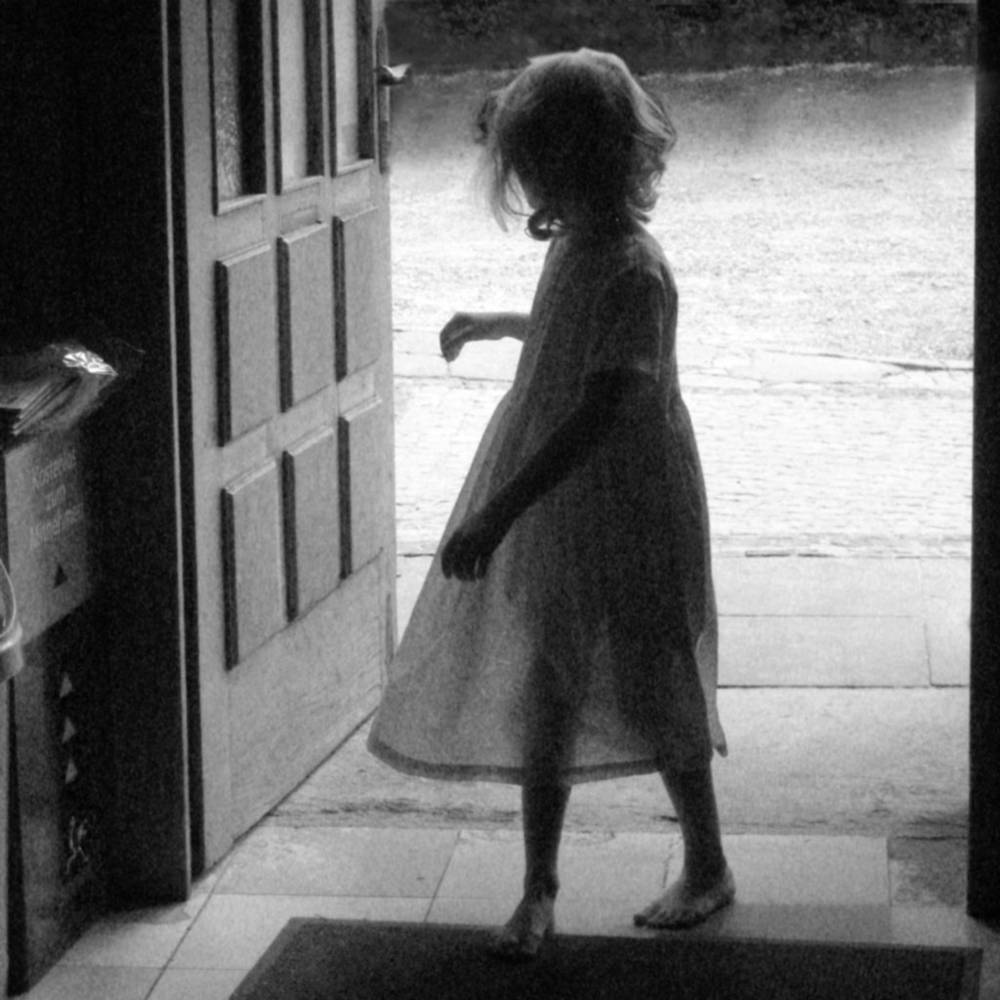
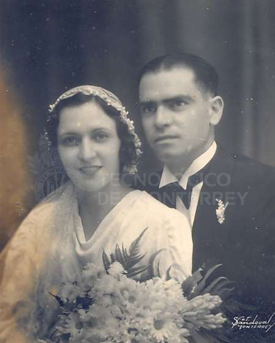

Niñez
Nacida el 13 de Octubre de 1931, hija de Lisardo y Plácida, vivió una infancia dura, pero feliz. Jugaba a la comba, a la billarda, a la ruleta… Su padre era carpintero y su madre cuidaba de la casa y de sus 4 hijas; ella era la segunda de sus hermanas.
Juventud
Sus padres le hablaban en gallego y en el colegio aprendió el castellano. La escuela le encantaba y su asignatura favorita eran las matemáticas.
Matrimonio e Hijos
Se casó a los 21 años. En ese momento se mudó al pueblo de su marido, que distaba 5 Km. del suyo. Tuvo su primer hijo y tuvo que emigrar a Venezuela, dejó su hijo a cargo de sus padres. Estuvo 3 años en Venezuela y regresó otra vez a su pueblo. Después tuvo dos hijas más. En total tuvo tres hijos, un varón y dos mujeres.
Anécdotas
Pasó su vida en el pueblo dedicándose a cuidar de sus hijos, de su casa, de las tareas agrícolas y ayudaba a su marido en un molino que tenían, donde iban los vecinos a que les molieran los granos de maíz y centeno para hacer harina, necesaria para la alimentación de los animales y también para hacer pan.
Su vida estuvo marcada por el regreso al pueblo desde Venezuela. Siempre soñó con irse otra vez. También sus hijos fueron muy importantes en su vida. Recuerda con mucho cariño su infancia con sus padres, abuelos, hermanas, tías, primas y toda la familia.